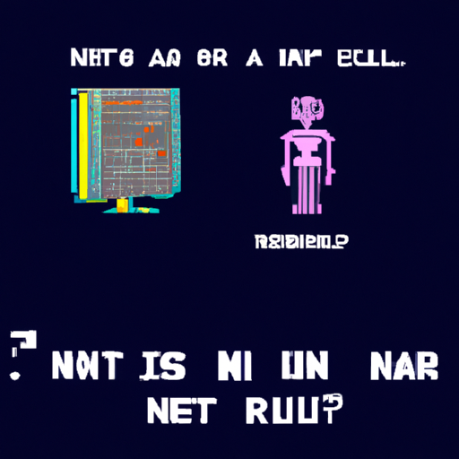

Why AI will never replace the radiologist
In recent years, AI and machine learning have been touted as a way to revolutionize the medical field. From diagnosing diseases to predicting outcomes, many experts have predicted that AI will eventually replace the need for medical professionals, including radiologists.
However, as advanced as AI has become, there are still many things it cannot do. For example, AI lacks the ability to understand subtle nuances in medical images. A radiologist can evaluate a scan and make an educated guess based on their experience and knowledge. An AI simply cannot do this.
In addition, AI is limited by the data it is given. AI models are only as accurate as the data they are trained on. Radiologists have years of experience and know what to look for when evaluating a scan. AI does not have this capability.
Finally, AI does not have the ability to think outside the box. A radiologist can look at a scan and think of a diagnosis that may not have been initially considered. AI cannot do this. It relies solely on the data it is given and cannot process complex situations.
For all these reasons, I believe that AI will never replace the radiologist. It can assist in the diagnosis process, but it will never be able to fully replace a human with experience and knowledge.